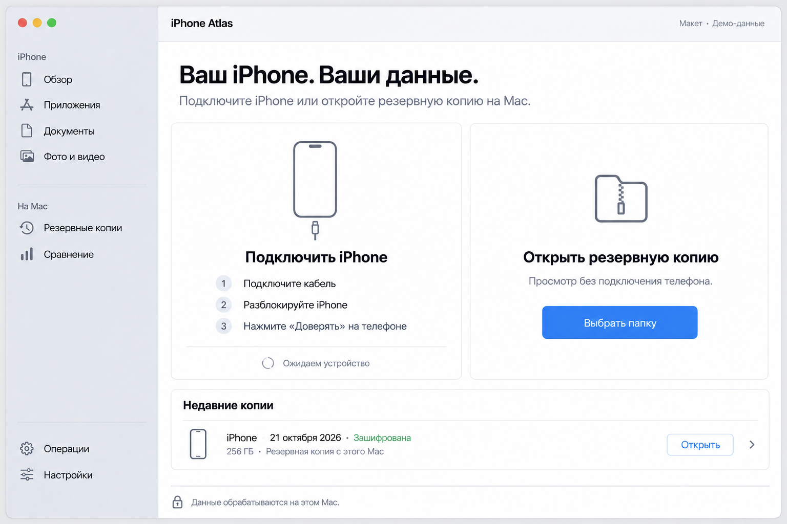
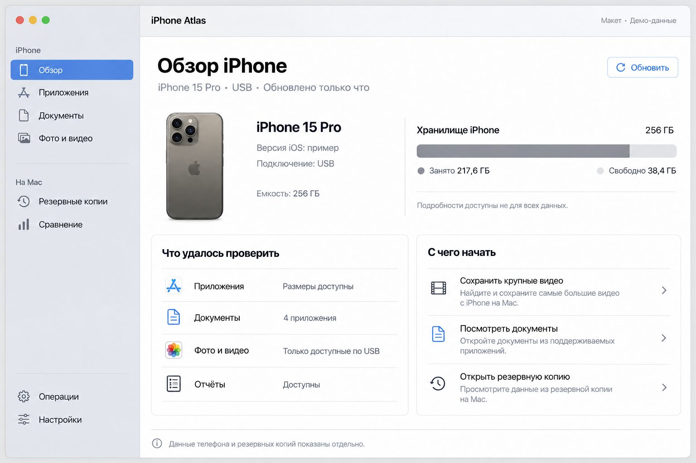
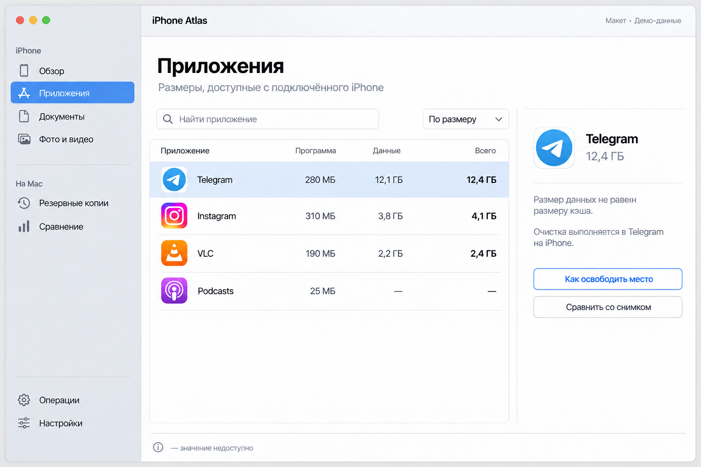
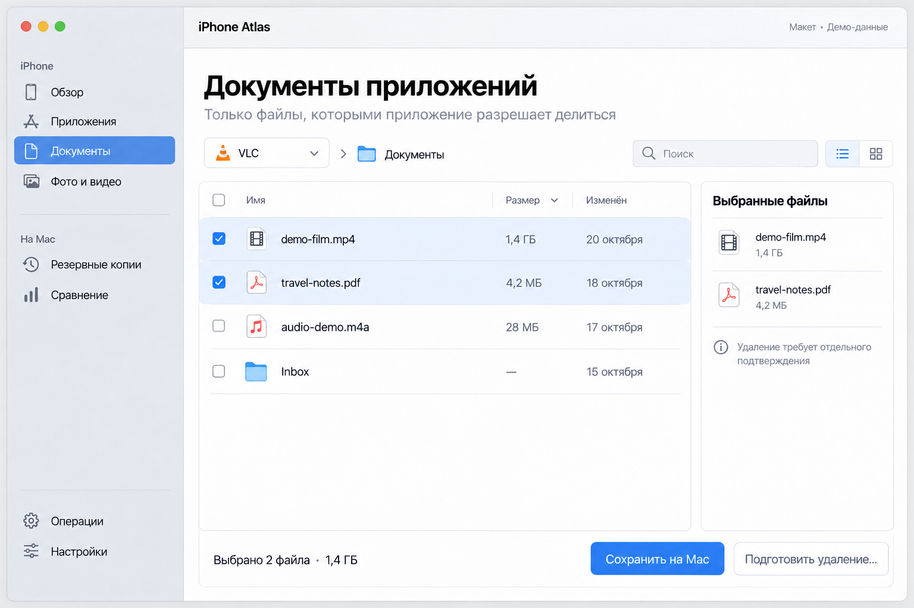
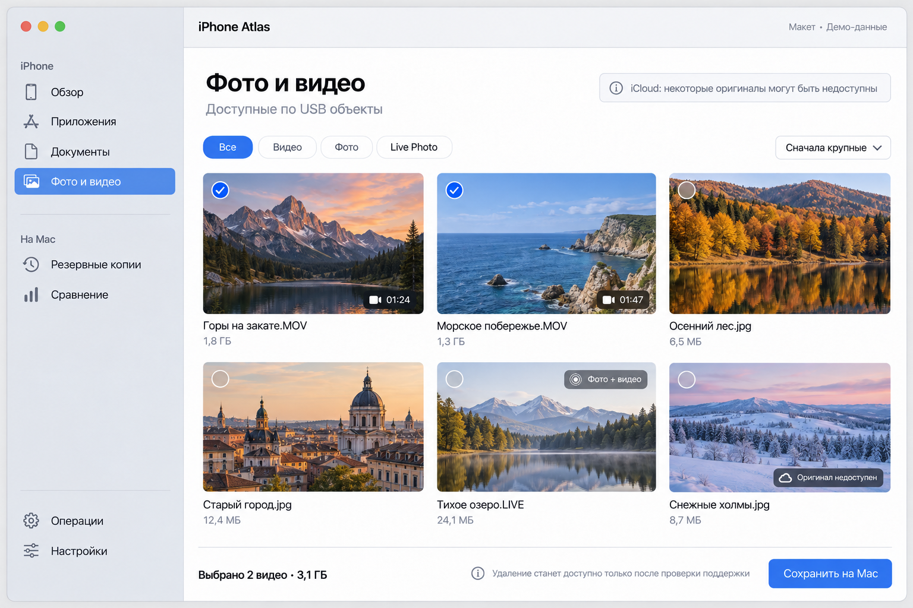
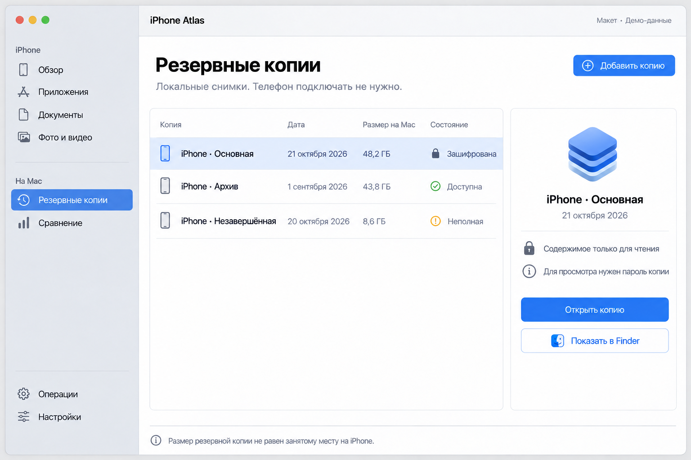
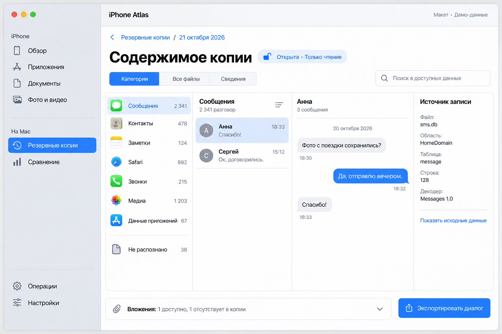
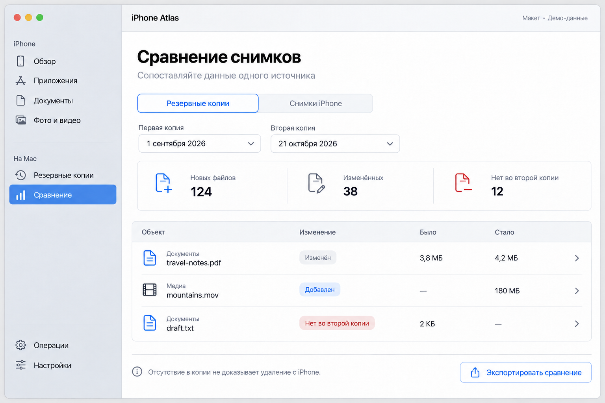
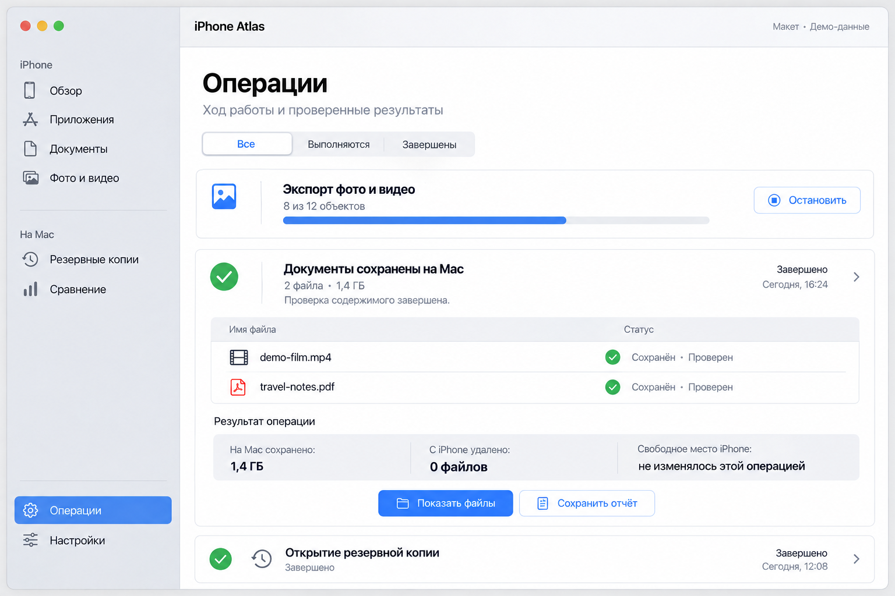
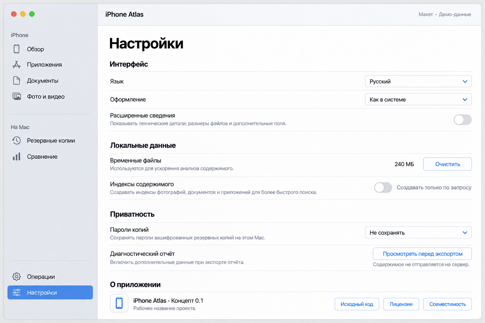

Основные страницы


















Простая macOS-утилита для анализа iPhone и глубокого просмотра резервных копий. Десять основных страниц и четыре дополнительных изображения деталей и состояний.









